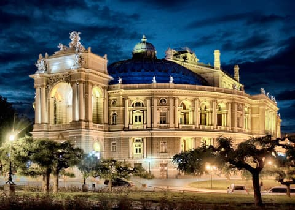
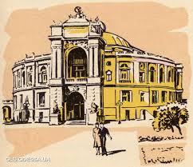

 Odessa National Academic Opera and Ballet Theater is the first theater in Odessa in terms of time of construction, significance and fame, one of the largest theaters in Ukraine. The first building was opened in 1810 and burned down in 1873. The modern building was built in 1887 by the architects Felner and Gelmer in the New Viennese Baroque style.  The interior of the auditorium is stylized as late French Rococo architecture. The unique acoustics of the horseshoe-shaped hall allows you to convey even a whisper from the stage to any corner of the hall. The complete restoration of the theater building was completed in 2007. P. I. Tchaikovsky, N. A. Rimsky-Korsakov, S. V. Rachmaninov conducted in the theater, Fyodor Chaliapin, Salome Krushelnitskaya, Leonid Sobinov sang, Anna Pavlova and Isadora Duncan danced. Alexander Pushkin mentions the Odessa Theater in the novel "Eugene Onegin". Forbes magazine included the Odessa theater in the list of the most unusual sights in Eastern Europe.